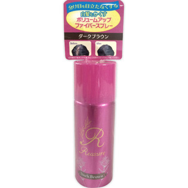

返回列表
产品名称：リーシュア ボリュームアップファイバー ミニ BR

ピーイーシー リーシュア ボリュームアップファイバー ミニ BR ３０Ｇ
メーカー ピーイーシー
JANコード 4589923980126
商品の特徴
分け目を目立たなくする
白髪もかくす
- 成分・分量
- DME、エタノール、シクロペンタシロキサン、パルミチン酸エチルヘキシル、ナイロン－６、（t-ブチルアクリルアミド/ジメチルアクリルアミド/ジアクリル酸PEG-14)クロスポリマー、（メタクリロイルオキシエチルカルボキシベタイン／メタクリル酸アルキル）コポリマー、シリカ、トリメチルシロキシケイ酸、ポリプロピルシルセスキオキサン、水、メトキシケイヒ酸エチルヘキシル、ＢＧ、イソステアロイル加水分解コラーゲンＡＭＰＤ、オタネニンジン根エキス、ウンシュウミカン果皮エキス、センブリエキス、アルゲエキス、加水分解コンキオリン、トリエトキシカプリリルシラン、（+/-）酸化鉄、カーボンブラック、赤４０４、黄２０５、黄４、赤１０４（１）、黒401、酸化チタン
- 用法及び用量
- 使用方法
1.ご使用前に、缶をカタカタと音がしてから上下に１０回以上よく振ってください。
2.あらかじめ髪型を整えてください。
3.薄毛に対して２０ｃｍ程度離し、円を描くように小刻みに手を動かしてください。
◆使用後５分位は、手等で触れないでください。お急ぎの場合はヘアドライヤーをご使用ください。また、使用後のクシ通しはお避けください。
◆ご使用後、市販のつや出しスプレーまたは、ヘアスプレーをお使いただきますと、より色つやがでて見た目がよくなります。
◆出にくい場合は缶を更に強く上下によく振ってください。